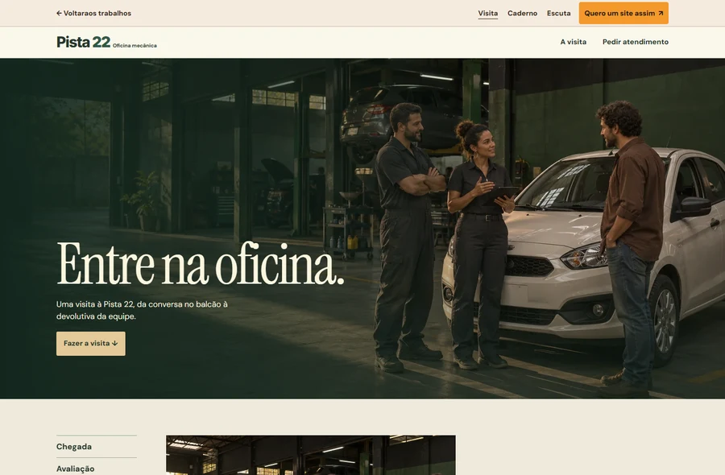
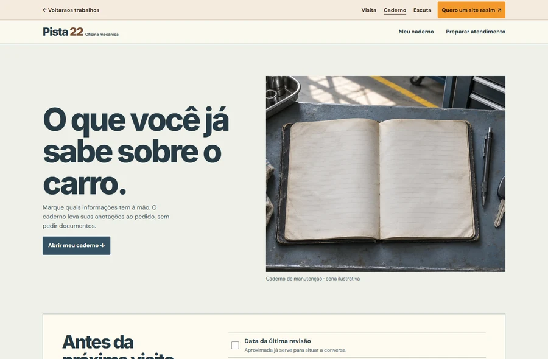
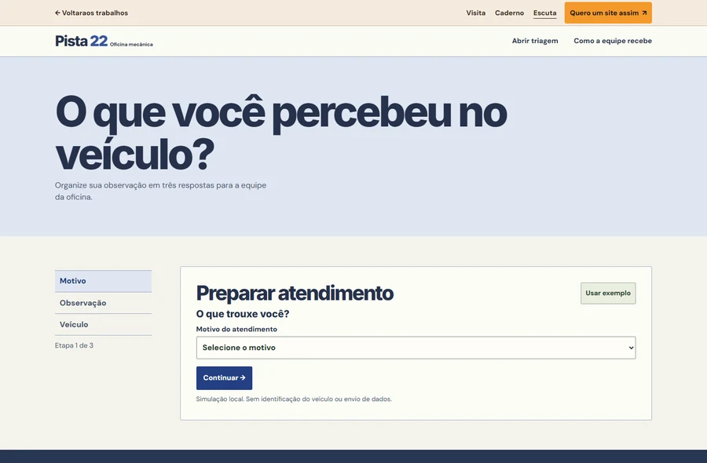

Visita
Percorra as etapas da oficina, da chegada à conversa sobre o que foi observado.
Abrir demonstraçãoVisite a oficina, reúna suas anotações ou monte uma triagem. As três versões usam o mesmo negócio fictício.

Percorra as etapas da oficina, da chegada à conversa sobre o que foi observado.
Abrir demonstração
Monte um caderno com o histórico que tem à mão e leve o registro ao pedido.
Abrir demonstração
Organize o que percebeu em uma triagem guiada, com um resumo do relato.
Abrir demonstração